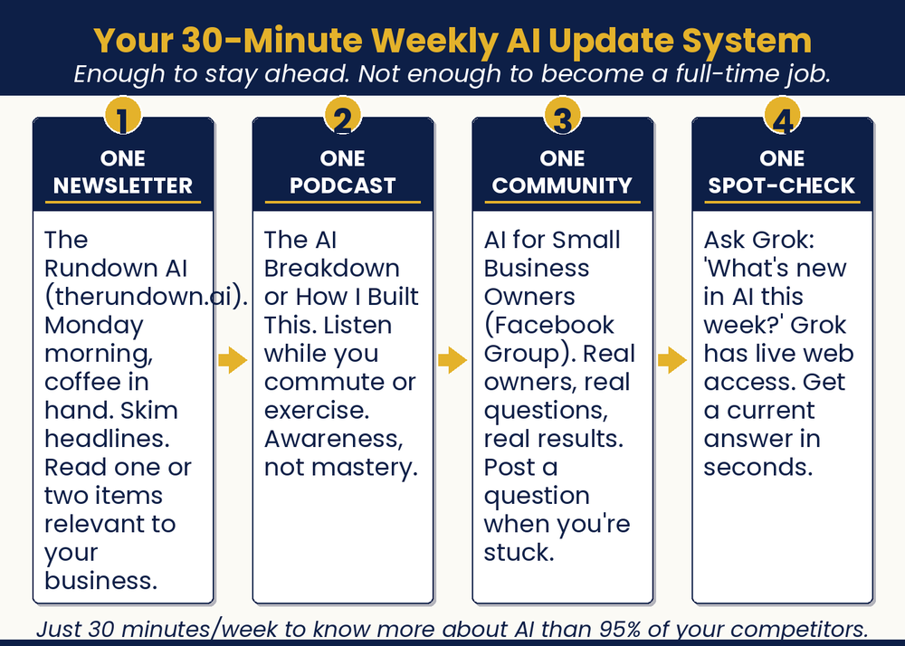
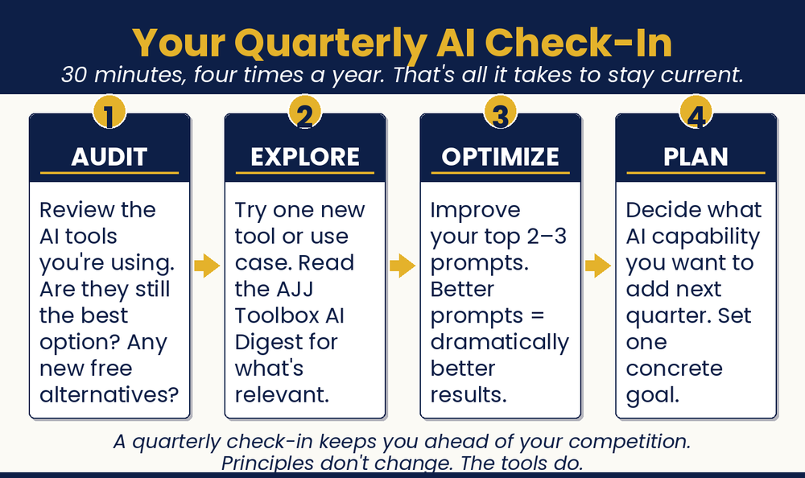

Chapter 23 — Run Circles Around the Big Guys
Welcome to Your Future

Chapter Recap
You made it through the book, and the path ahead is clear. Picture your business running with AI. The chatbot books jobs at midnight. Reviews answer themselves. Follow-ups happen on their own. This chapter shows how to keep that edge. Spend thirty minutes a week staying sharp. Review your tools each quarter. Set one big goal for the year. Small is your strength. Now go run circles around the big guys.
In This Chapter
- Your Weekly 30-Minute Investment
- Your Quarterly Big-Picture Review
- Your One-Year Win-Big Plan
- You’re Not Alone
- I’m in Your Corner
Grab-and-Go Prompts
1. Weekly AI Briefing — two minutes every Monday
What are the most important AI developments from the past week that are relevant to small business owners?
2. Quarterly Stack Audit — run once a quarter
Here are the AI platforms I’m currently using and what I use each for: [list]. Are there any redundancies? Is there anything I’m paying for that a free tier now covers? What gaps do you see in my stack for a [business type]?
Download
- 📄 Stay-Current System (Weekly + Quarterly) — your weekly 30-minute AI routine plus the quarterly Audit, Explore, Optimize, and Plan check-in.

Your Move
Open your calendar right now. Add an entry one year from today. Label it AJJ Big Win. When that day comes, take a few minutes to reflect on how the year went. What changed? What worked? What would you do differently? Your mission is to build a thriving business within one year, starting today.

Read the full chapter in
AI Jiu-Jitsu: Run Circles Around the Big Guys, the book this toolbox comes from.
Prefer to have it set up for you? BreakThru Growth offers AI coaching and done-for-you setup for small businesses → BreakThruGrowth.com